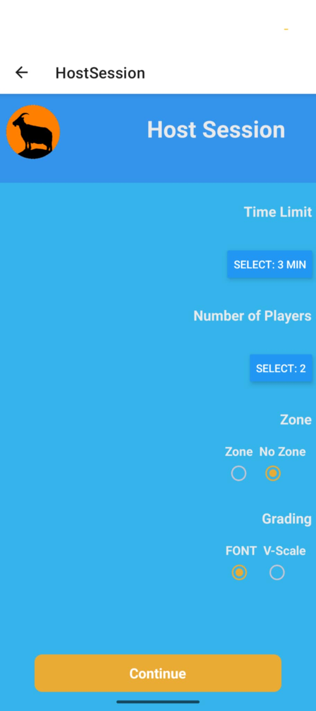
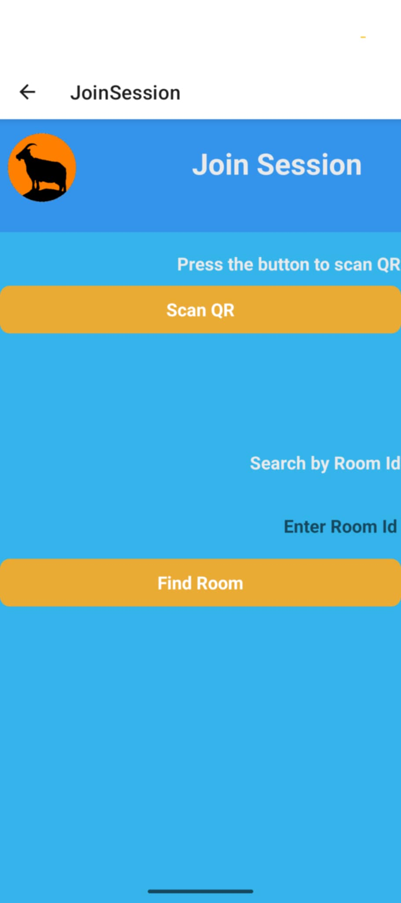
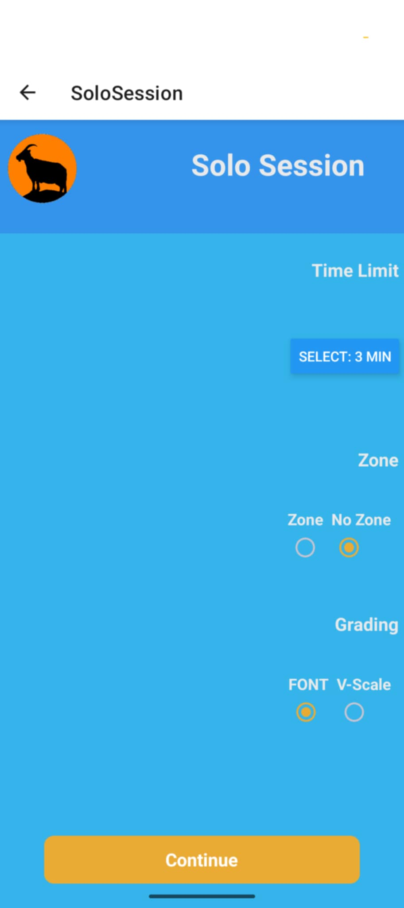
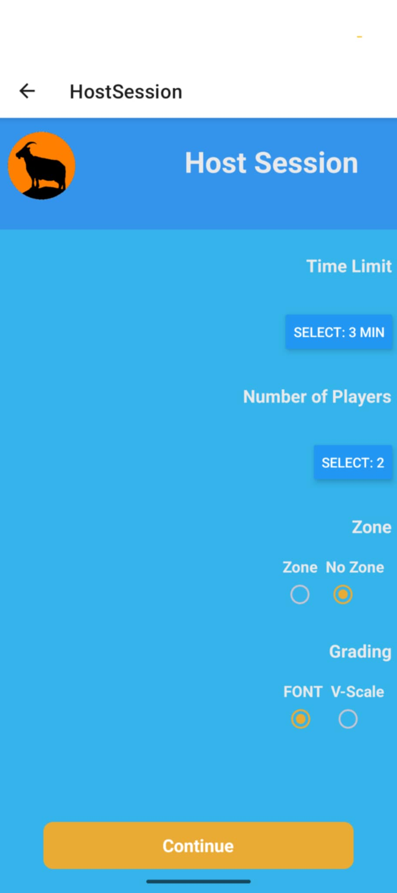
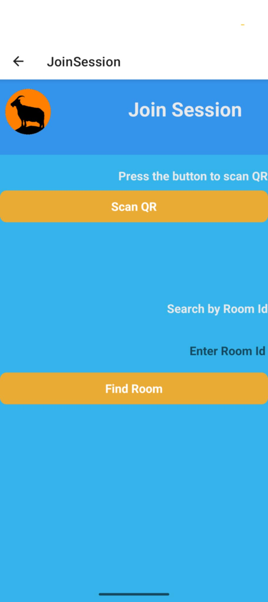
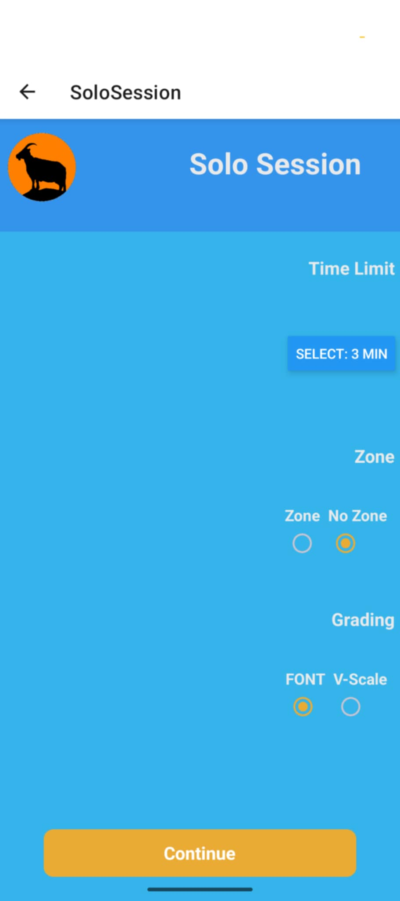

Goated is my first solo-app created after the NorthCoders bootcamp.
When I graduated from the bootcamp I wanted to spend some time building something personal to me, taking all of the lessons I'd learned since beginning programming 6 months earlier.
Part of the tech-stack from my group project had been using web-sockets to facilitate real-time chat between users. I realised I could use this same component to create rooms and as such I would be able to create something of a multiplayer game.
Goated is meant as a companion app for boulderers particularly those that enjoy going to the gym with friends as it allows a host to create a room, which up to 8 other users can join via QR code and an integrated camera.
Once in a room, the host can input routes, under which each user records the number of attempts it took them to complete. Once the host ends the session, a score and placing is given, which will be displayed for each user. The scoring is based on standard bouldering competition rules.
While still a work-in-progress, the multiplayer aspect is essentially fully functional. My next steps will be to create a solo mode, which connects to a database and allows users to track their progress, similar to apps like FitBit.